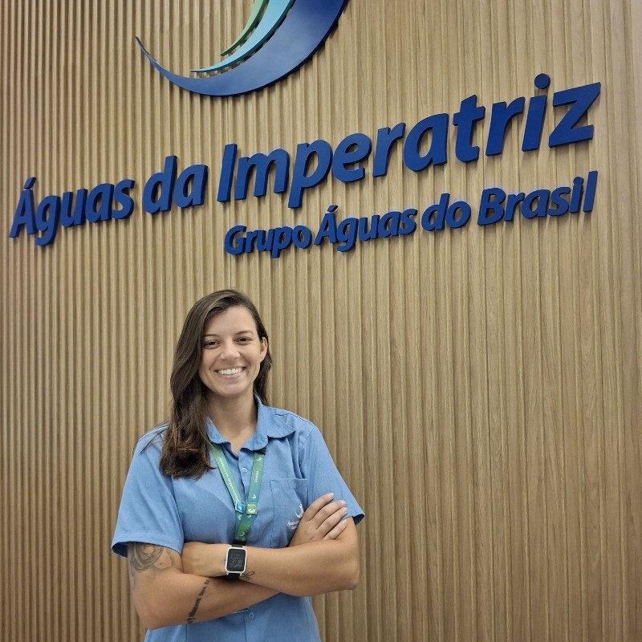
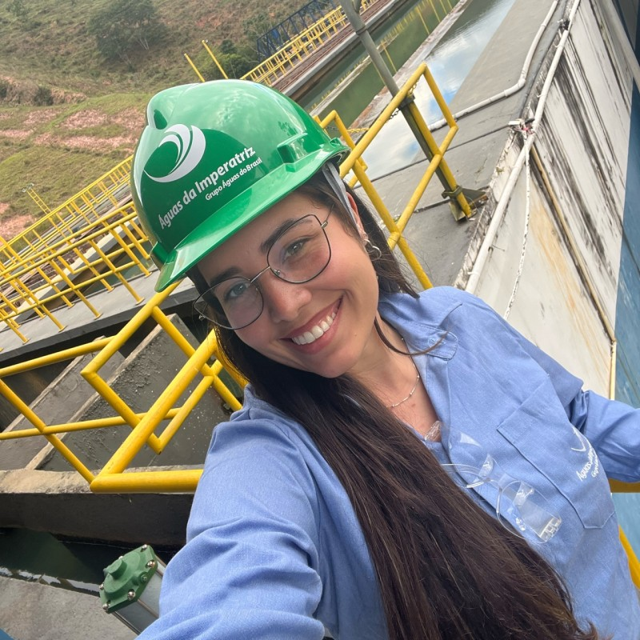
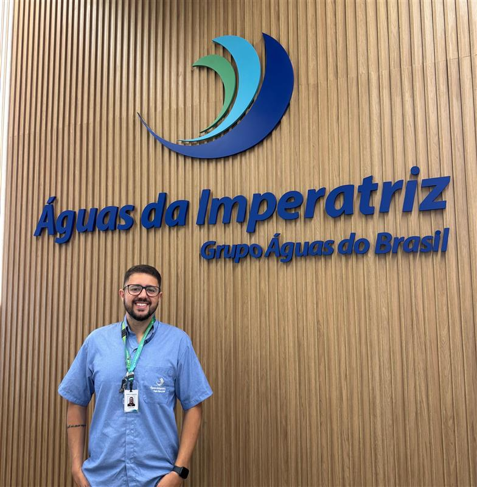
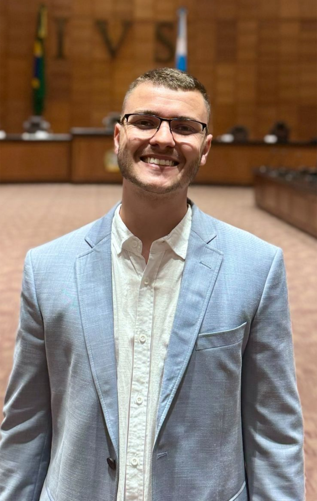
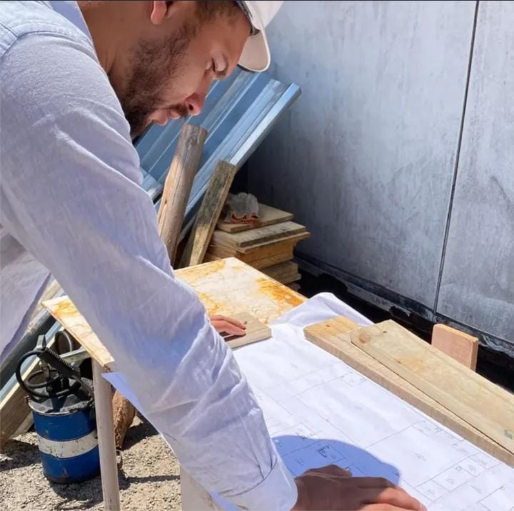
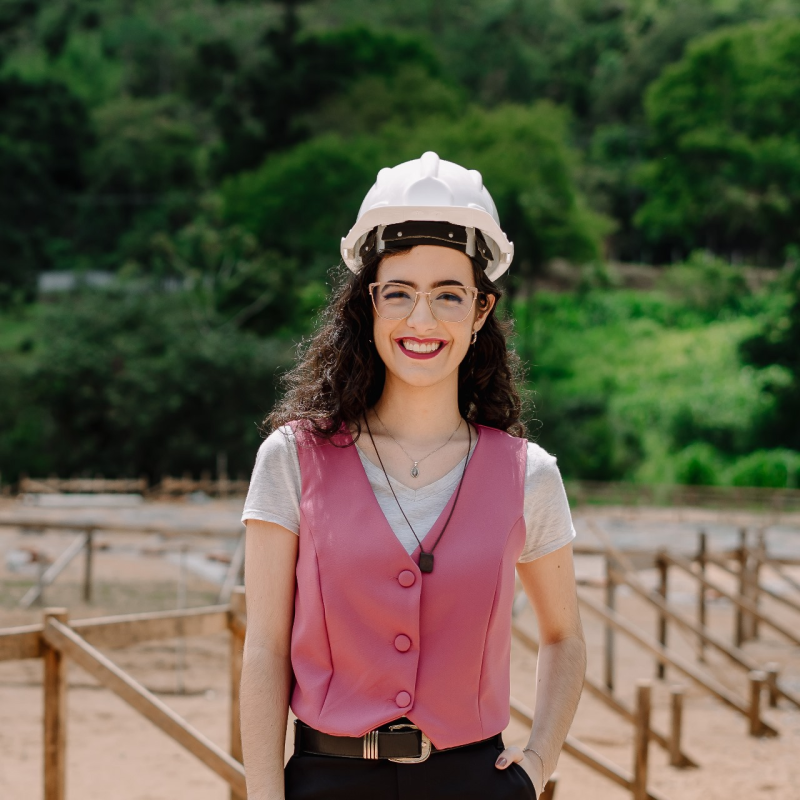
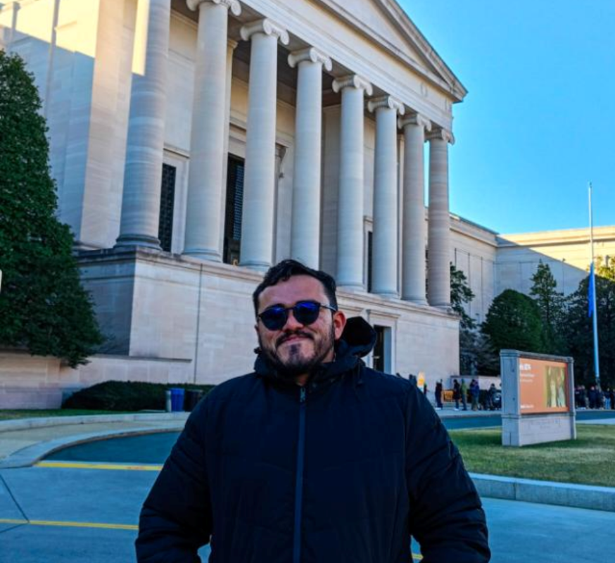

- 08:00 às 09:00 - Credenciamento e Café de Boa-Vindas
- 09:00 às 10:30 - Abertura Oficial
- 10:30 às 12:00 - Palestra: "A Importância das Análises nos Projetos de Engenharia Civil"

Apolonio Bechara
Engenheiro civil, pós-graduado em Engenharia Geotécnica, Fundações, Infraestruturas e Barragens
- 14:00 às 15:30 - Palestra: "Empreendedorismo na Construção"

Alex Nogueira
Analista Técnico Educacional – Sebrae-RJ
- 15:30 às 17:00 - Mesa Redonda com Egressos: "Da Universidade ao Mercado: Caminhos e Desafios na Engenharia e Arquitetura"
Luana Sant'Anna
Engenheira Civil - Segurança do Trabalho
Tamara Pains
Arquiteta e Urbanista - Segurança do Trabalho
Thiago Lima
Engenheiro Ambiental e Sanitarista e Engenheiro Civil
Leonardo Moraes
Engenheiro Civil
Gabriel dos Santos
Engenheiro Fiscal na Secretaria Especial de Fiscalização de Obras Públicas na Prefeitura de Teresópolis
Jussara Helena Paula
Engenharia Civil
- 17:00 às 18:00 - Palestra: "Desafios e Conquistas na Obra da Vinícola Maturano"
Marcos Junior
Engenheiro Estrutural - Responsável Pela Obra na Vinícola Maturano
- 09:00 às 10:30 - Palestra: "O Que Ninguém Te Conta Sobre Uma Usina de Concreto"

Fábio Augustin
Engenheiro Civil na Aditibras - Especialista em Tecnologia do Concreto
- 10:30 às 12:00 - Palestra: "Framework de Investigação da Deformação Permanente em Pavimentos Asfálticos"
Bruno Mota
Professor no Unifeso - Doutor em Engenharia Civil e Mestre em Engenharia de Transporte
- 14:00 às 15:30 - Palestra: "Inovação, Tradição e Responsabilidade na Construção do Futuro"
Michael Dilly
CEO da Arte Construir
- 15:30 às 17:00 - Palestra: "Ampliação da BR-493: Engenharia em Terrenos Desafiadores e Áreas Sensíveis"

Diego Salomon
Engenheiro Civil - Coordenador de Obras na EcoVias RioMinas
- 10:30 às 12:00 - Palestra: "Framework de Investigação da Deformação Permanente em Pavimentos Asfálticos"
- 14:00 às 15:30 - Palestra: "Empreendedorismo na Construção"